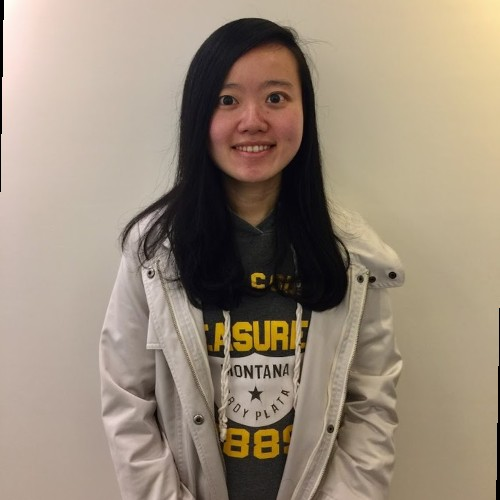

Candi Lilun Chiu

Summary
Software Engineer specializing in Backend Development and Test Automation.
Programming Languages
Java / Python / Swift / Script writing
Tools & Tech Stacks
Spring/ SpringBoot/ Spring Security/ Quarkus/ Hibernate(JPA)/ REST API/ MySQL/ AWS/ Selenium / Appium / GitHub Action/ HTML/ CSS
Employment History
Software Engineer at EGYM GmbH, Munich
July 2023 — Present
- Contributed to the development of a web-based platform using Java, spring MVC and Hibernate.
- Collaborated with other developers to ensure shared code was of high quality and met design specifications
- Developed unit tests to ensure code quality and ensure compliance with software development best practices
Software Engineer at kfzteile 24 GmbH, Berlin
October 2021 — June 2023
- Implemented new features and resolved bugs
- Implemented integration tests and unit tests and automated tests (e2e)
- Setup CI/CD pipeline - GitHub Action
QA Engineer - Software at ProGlove GmbH, Munich, Germany
August 2019 — September 2021
- Firmware/Android/iOS/FrontEnd topics
- Test Plan/Test Suite/Test case creation
- Feature testing/Regression/Sanity/Release testing
- Python/Appium/Selenium
- Manual/Automation Testing
Software Quality Assurance Engineer at Bowers & Wilkins, Taipei, Taiwan
March 2016 — June 2019
- Monitor, analyze, and test software development process and products
- Writing test cases
Education
Master, National Taiwan Normal University, Taipei, Taiwan
September 2010 — June 2012
Field of Study: Electro-optical Science and Technology
Bachelor, Yuan-Ze University, Taoyuan, Taiwan
September 2006 — June 2010
Field of Study: Electrical and Electronics Engineering
Other
Contact Me